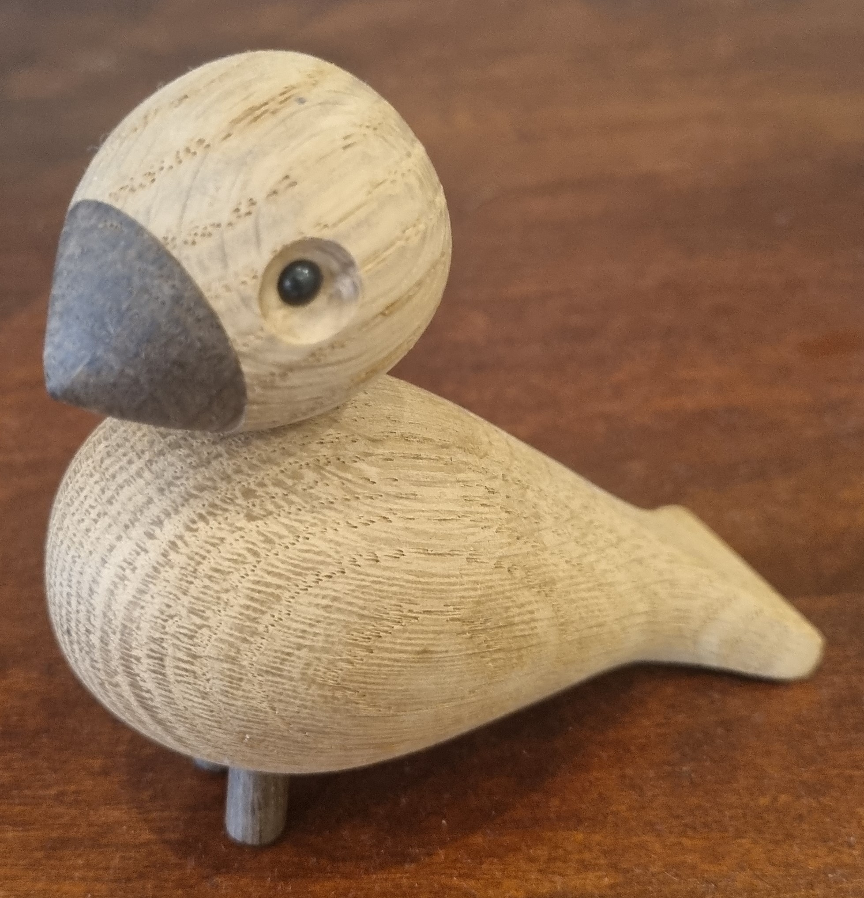

App
Til að byrja með fór ég í play store á símanum mínum og downloadaði Magi Scan.
Myndatökun
Ég valdi fugl úr viði sem model í Photogrammetri.
Fuglinn var setur ofan á blát plastborð og svo notaði ég Magi Scan til að myndataka fuglinn
Vandmál
Eina vandamálið í þessu var tíminn sem appið tók. Fyrst þegar ég klárað myndatökuna stóð að processið myndi taka 24 daga en eftir 2 daga var það komið niður í 6 daga.
Ég ákvað að kaupa premium fyrir um 1000kr og þá fór það niður í 5 min.